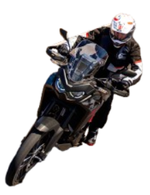
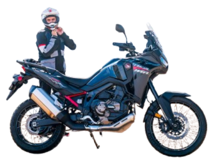

Honda Africa Twin 2026 predstavlja novu generaciju avanturističkih motocikala sa unapređenom tehnologijom, modernom elektronikom i boljim performansama.


Honda Africa Twin 2026 predstavlja moderan avanturistički motocikl koji kombinuje naprednu tehnologiju, snažne performanse, udobnost i pouzdanost. Namenjen je vozačima koji uživaju u dugim putovanjima, svakodnevnoj vožnji i istraživanju zahtevnih terenskih puteva. Posebna pažnja posvećena je elektronici, bezbednosti i kvalitetu upravljanja.
Jedna od najvažnijih karakteristika motocikla Honda Africa Twin 2026 jeste napredni IMU sistem, koji prati kretanje motocikla i omogućava preciznije upravljanje elektronskim sistemima asistencije. Ova tehnologija doprinosi boljoj stabilnosti, kontroli proklizavanja i sigurnijem kočenju u različitim uslovima vožnje.
Tubeless pneumatici dimenzija 21 inč napred i 18 inča pozadi kod standardnog modela omogućavaju praktičnije održavanje i lakšu popravku u slučaju oštećenja pneumatika tokom putovanja.
Snažan motor pruža odličan obrtni moment u širokom rasponu obrtaja, omogućavajući ravnomerno ubrzavanje, lakše savladavanje zahtevnih terena i udobnu vožnju na otvorenom putu. Karakteristike motora prilagođene su potrebama ljubitelja avanturističkih motocikala.
Savremeni TFT ekran omogućava jednostavan pregled najvažnijih informacija o motociklu. Napredne mogućnosti povezivanja sa pametnim telefonom dodatno unapređuju iskustvo vožnje i olakšavaju korišćenje navigacije.
Posebno se izdvaja Showa EERA™ elektronski upravljano ogibljenje, dostupno u odgovarajućim verzijama motocikla. Ovaj sistem prilagođava karakteristike ogibljenja uslovima puta i odabranom režimu vožnje, pružajući visok nivo udobnosti i stabilnosti.
Honda Africa Twin 2026 svojim dizajnom, kvalitetom izrade i tehnološkim rešenjima predstavlja privlačan izbor za ljubitelje avanture. Kombinacija savremene elektronike, ergonomije i snažnog motora omogućava vozačima da uživaju u različitim stilovima vožnje, od gradskih saobraćajnica do udaljenih planinskih puteva. Ovaj motocikl objedinjuje praktičnost, funkcionalnost i prepoznatljiv avanturistički karakter, uz naglasak na bezbednosti, kontroli i zadovoljstvu tokom svakog putovanja.